01
Escamados
"Squamata"
A ordem mais numerosa: lagartos, cobras e anfisbenas. Pele recoberta de escamas que se sobrepõem, podendo ser trocada inteira.
- Iguana-verde
- Jararaca
Os répteis são vertebrados de sangue frio (ectotérmicos), de pele seca coberta por escamas, que respiram por pulmões e, em sua maioria, reproduzem-se por ovos com casca resistente. São criaturas adaptadas tanto ao calor abrasador do deserto quanto às águas tropicais.
Possuem coluna vertebral e esqueleto interno ósseo bem desenvolvido.
Regulam a temperatura do corpo a partir do ambiente — daí o hábito de tomarem sol.
Coberta por escamas córneas, sem glândulas, impedindo a perda de água.
Mesmo as espécies aquáticas, como tartarugas e jacarés, respiram por pulmões.
Botam ovos com casca dura ou coriácea — independência da água para reprodução.
Dois átrios e um ventrículo (parcialmente dividido) — exceto os crocodilianos, com 4.
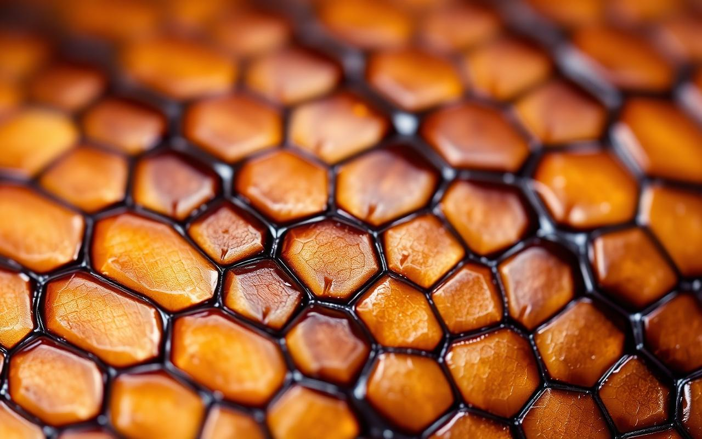
A substância córnea que impermeabiliza toda a pele dos répteis, evitando a desidratação.
“A pele do réptil é coberta por queratina, a mesma proteína que forma nossas unhas e cabelos — e é ela que permite que esses animais vivam em ambientes secos, evitando desidratação.”Substância impermeabilizante
Hoje, dos enormes grupos que dominaram a Terra, restam quatro linhagens principais. Cada uma com sua própria assinatura evolutiva.
A ordem mais numerosa: lagartos, cobras e anfisbenas. Pele recoberta de escamas que se sobrepõem, podendo ser trocada inteira.
Tartarugas, cágados e jabutis. Possuem casco ósseo fundido às vértebras e costelas — armadura natural.
Jacarés, crocodilos e gaviais. Únicos répteis com coração de quatro câmaras completas; predadores de emboscada.
Possui apenas uma espécie viva — as tuataras, da Nova Zelândia. Possuem estruturas semelhantes às encontradas em fósseis conhecidos.
Três quelônios, três modos de vida totalmente distintos. Aprenda a diferenciá-los pelo formato do casco, dos pés e do habitat.
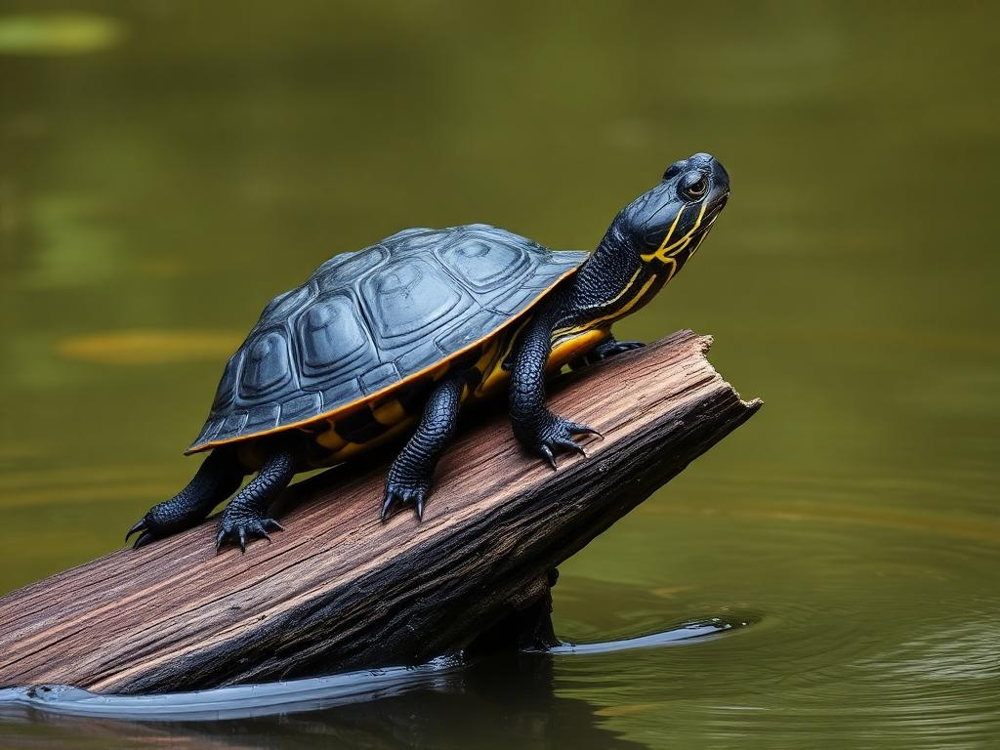
Quelônio de água doce. Casco achatado e oval, pescoço longo que dobra lateralmente. Pés com membranas interdigitais para nadar. Vive em rios, lagos e brejos.
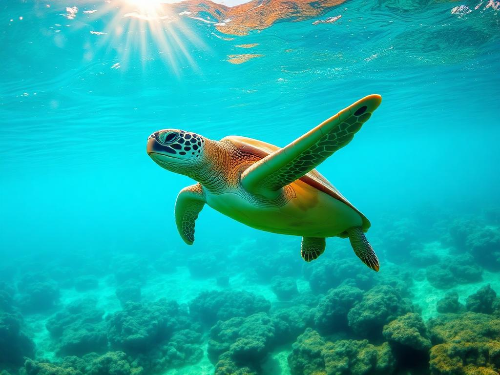
Vive no oceano. Casco hidrodinâmico e leve, membros transformados em nadadeiras — não retráteis. Migra milhares de quilômetros para desovar.
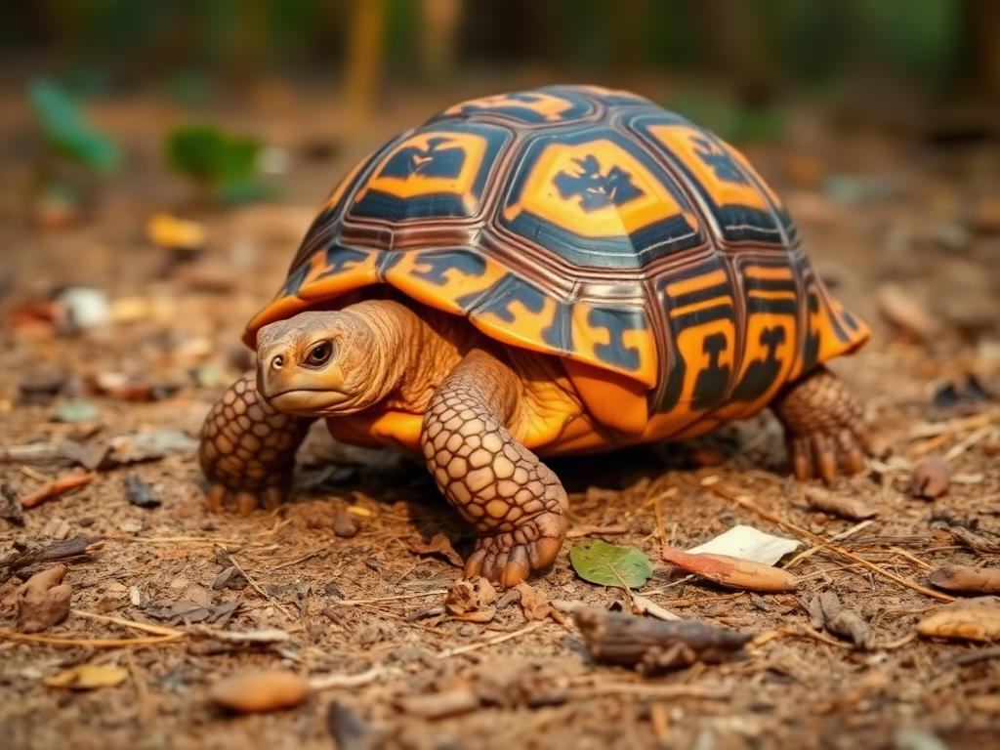
Quelônio terrestre. Casco alto e abobadado, patas cilíndricas semelhantes a colunas — como elefantes em miniatura. Vive em matas e cerrados do Brasil.
Um catálogo magazine das espécies brasileiras mais notáveis, do Pantanal à Mata Atlântica, do sertão à Amazônia.
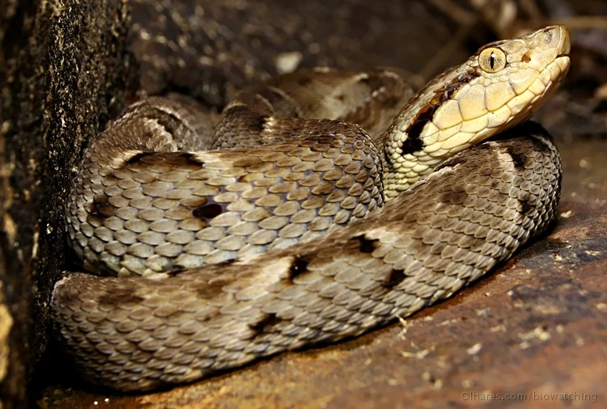
Vive em matas, capoeiras e bordas de plantação. Caça pequenos roedores, aves e anfíbios. Seu veneno é a base do captopril, medicamento para hipertensão.
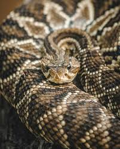
Habita áreas abertas e secas. Identificada pelo guizo na ponta da cauda. Veneno usado na produção de soro antiofídico — controla pragas de roedores no campo.
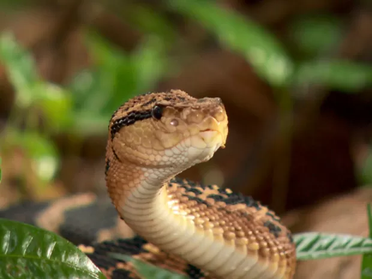
A maior serpente peçonhenta das Américas (até 3 m). Vive em floresta densa. Caça mamíferos de pequeno e médio porte.
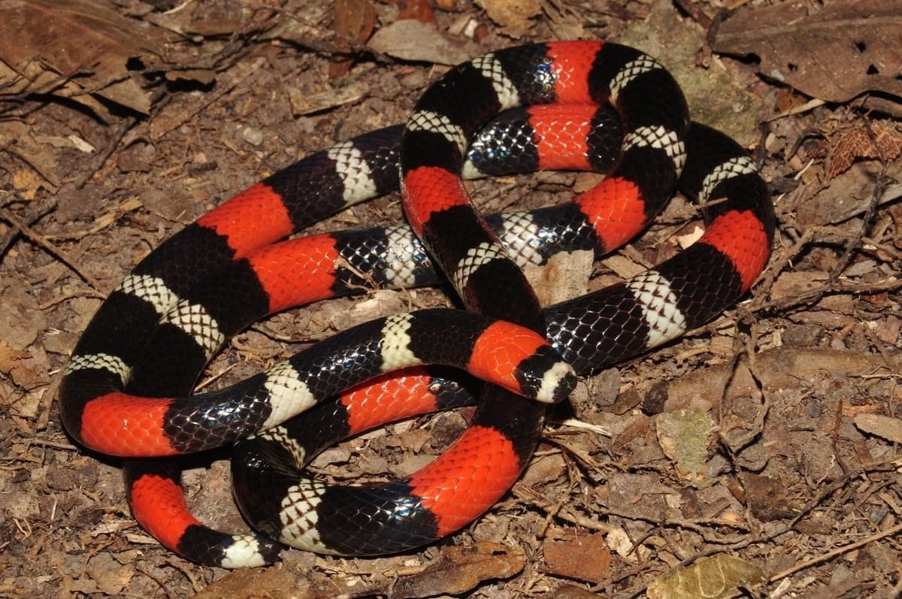
Anéis vermelhos, pretos e brancos. Vive escondida sob folhas e pedras. Alimenta-se de outras serpentes e lagartos. Veneno neurotóxico potente, mas raramente ataca o homem.
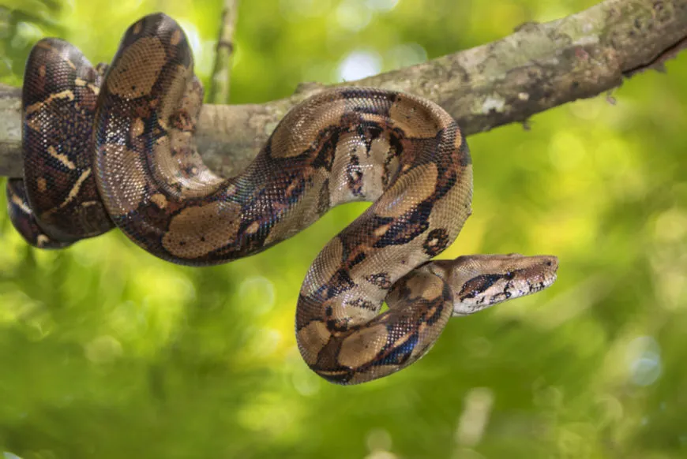
Não peçonhenta. Mata por constrição. Vive em florestas, cerrados e até áreas urbanas. Excelente controladora natural de roedores.
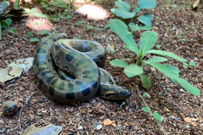
A maior serpente do mundo em peso. Aquática. Vive em rios e brejos, caçando por emboscada.
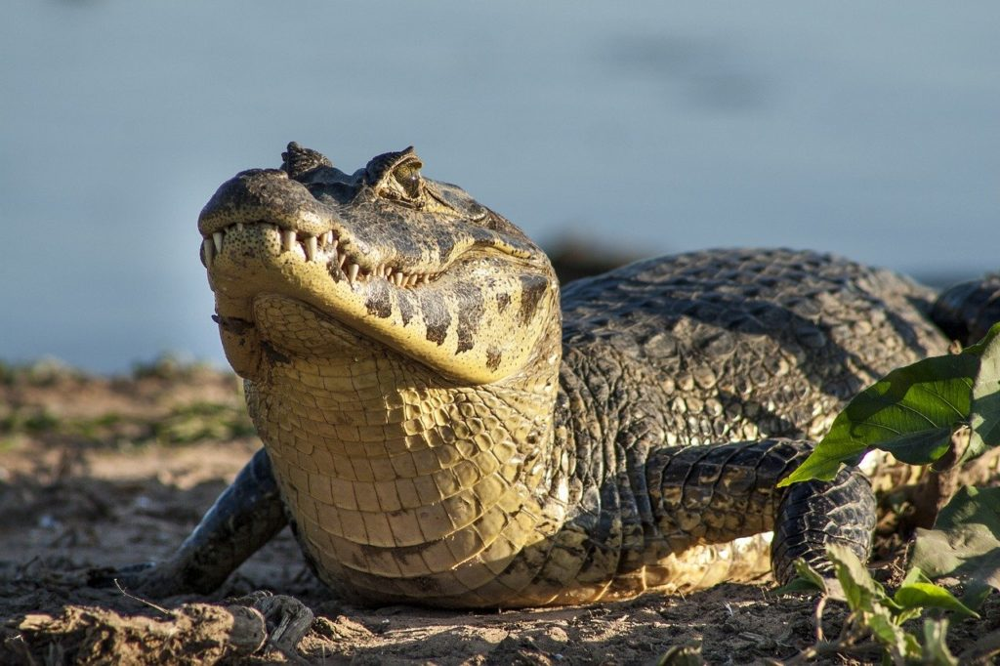
Predador de emboscada. Importante no equilíbrio ecológico — controla populações de peixes piranha.
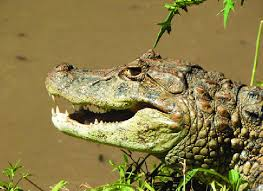
Vive em rios e lagoas costeiras. Reconhecido pela mancha amarela na garganta. Espécie protegida.
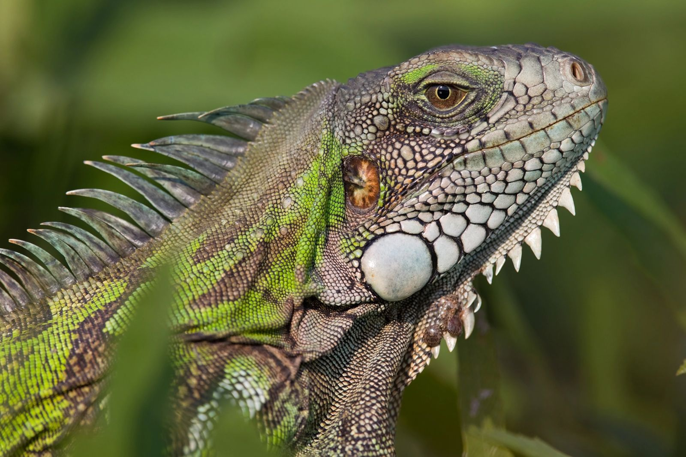
Vive nas copas de árvores próximas a rios. Sua dieta de folhas e flores faz dela importante dispersora de sementes.
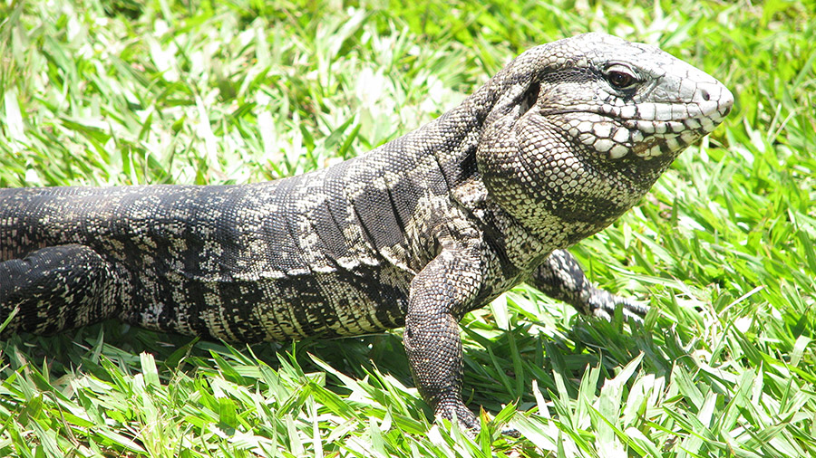
O maior lagarto do Brasil (até 1,4 m). Come frutas, ovos, insetos e pequenos vertebrados. Útil aos agricultores no controle de roedores.
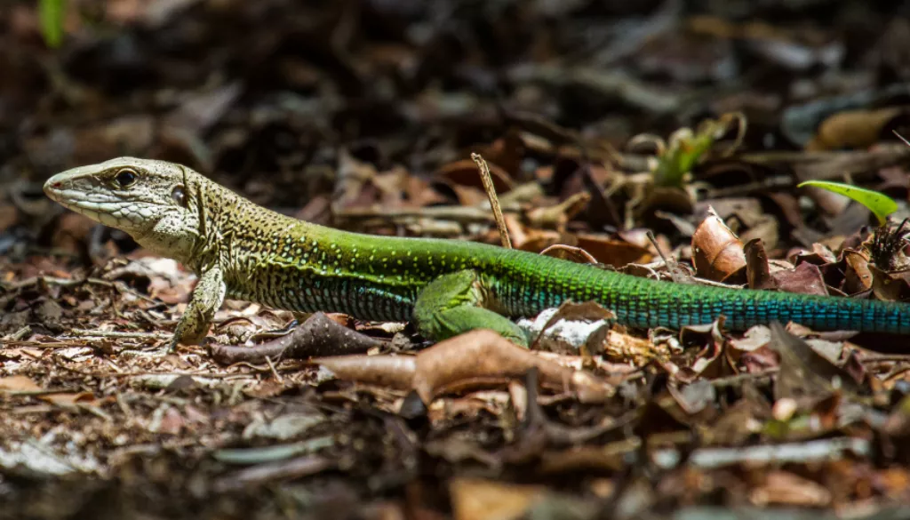
O lagarto mais comum do Brasil. Vive em pedras, muros e cercas. Excelente controlador de insetos.
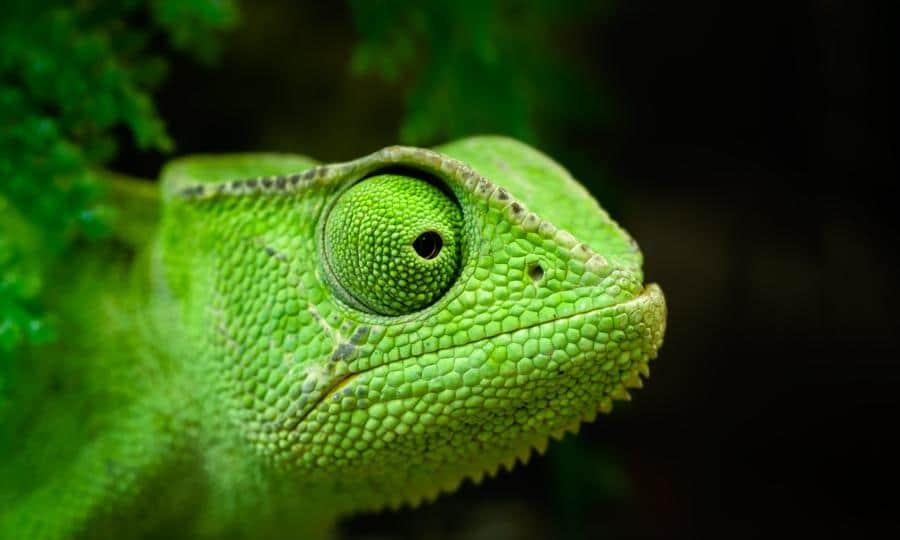
Muda de cor para se camuflar. Vive em árvores e arbustos.
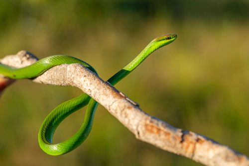
Não peçonhenta, ágil e arborícola. Caça pererecas e pequenos lagartos durante o dia.
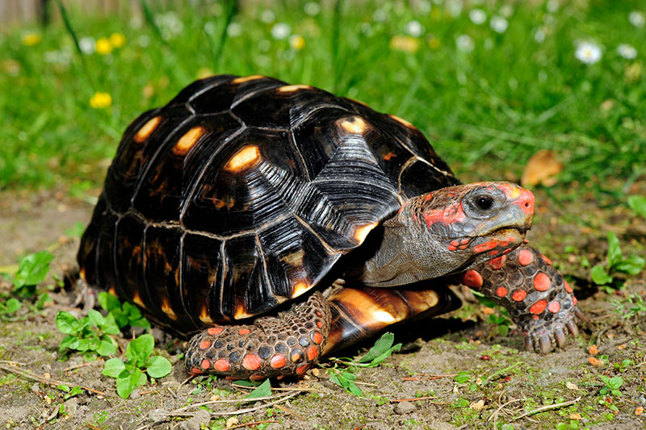
Quelônio terrestre brasileiro. Importante dispersor de sementes em frutas grandes que poucos animais conseguem ingerir.
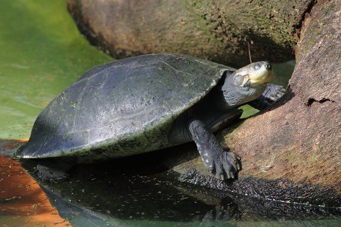
O maior cágado de rio do mundo. Espécie alvo de programas de conservação após décadas de captura predatória.
As cobras peçonhentas brasileiras pertencem a duas famílias principais: Viperidae (jararacas, cascavéis, surucucus) e Elapidae (corais verdadeiras). Conheça a localização das presas e a distribuição de cada uma.
Veneno proteolítico, hemorrágico e coagulante. Responsável pela maior parte dos acidentes ofídicos no Brasil.
Veneno neurotóxico potente — paralisa músculos respiratórios. Anéis em sequência completa preto-branco-preto-vermelho.
Veneno neurotóxico e miotóxico. Reconhecida pelo guizo na cauda e por seu chocalhar característico antes de atacar.
A maior peçonhenta das Américas (até 3 m). Veneno proteolítico e coagulante. Acidentes raros mas graves.
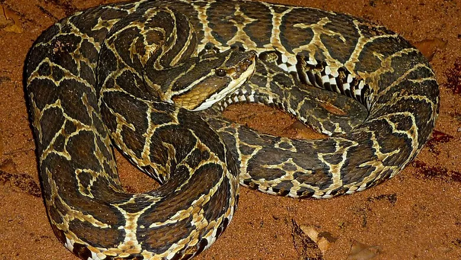
Veneno semelhante ao da jararaca. Padrão dorsal com manchas em forma de "ferradura" ou cruz.
A diferença entre o pânico e a vida está em saber agir. A regra de ouro é universal: mantenha a calma e leve a vítima ao hospital o mais rápido possível.
Quatro grupos, quatro estilos de vida.
| Característica | Lagartos | Cobras | Tartarugas | Crocodilos |
|---|---|---|---|---|
| Modo de vida | Terrestre, arbóreo, alguns aquáticos | Terrestre, arbóreo, aquático ou subterrâneo | Aquático (mar/rios) ou terrestre (jabutis) | Semi-aquático — vivem entre rio e margem |
| Olhos | Pálpebras móveis e funcionais | Sem pálpebras — olho coberto por escama transparente | Pálpebras móveis, com membrana nictitante | Pálpebras + membrana nictitante; visão noturna excelente |
| Orelhas | Abertura externa e tímpano visível | Sem orelha externa — sentem vibrações pelo solo | Tímpano coberto pela pele, audição limitada | Abertura com aba protetora; audição bem desenvolvida |
| Dentes | Pequenos, homodontes, fixos | Recurvados; algumas com presas inoculadoras de veneno | Sem dentes — bico córneo (rhamphotheca) | Cônicos, fortes, substituídos continuamente ao longo da vida |
| Coração | 3 câmaras (2 átrios + 1 ventrículo parcialmente dividido) | 3 câmaras | 3 câmaras | 4 câmaras completas — únicos répteis |
| Pulmões | Dois pulmões equivalentes | Um pulmão funcional (geralmente o direito); o outro reduzido | Dois pulmões; respiram movendo membros e pescoço | Dois pulmões grandes e eficientes; mergulham por longos períodos |
| Membros | Quatro patas curtas com garras | Ausentes (vestígios em pítons e jiboias) | Patas com garras (terrestres) ou nadadeiras (marinhas) | Quatro patas robustas; pés posteriores com membranas |
| Rabo | Longo; muitas espécies fazem autotomia (soltam o rabo) | Continuação do corpo; sem distinção clara | Curto e geralmente retrátil sob o casco | Longo, lateralmente comprimido — usado como remo na água |
| Escamas | Pequenas, sobrepostas; trocadas em pedaços | Largas no ventre; trocadas inteira (ecdise) | Modificadas em placas córneas sobre o casco ósseo | Grandes, retangulares; algumas com placas ósseas (osteodermos) |
Antes de qualquer coisa: verifique a legislação. No Brasil, a manutenção de répteis silvestres exige autorização do IBAMA. Espécies legalizadas (como certos geckos e jiboias) devem vir de criadouros registrados.
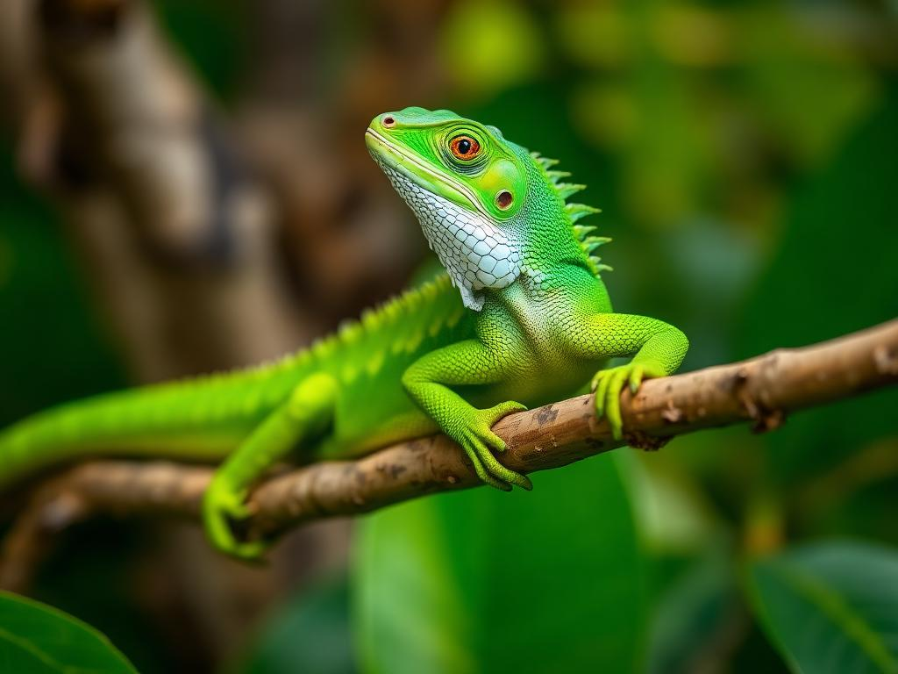
Terrário no mínimo 3× o comprimento do animal. Ventilação cruzada, mas sem correntes de ar.
Gradiente térmico: lado quente (28–32°C) e lado frio (22–25°C). Lâmpada cerâmica ou de aquecimento. Termômetro obrigatório.
Essencial para a síntese de vitamina D3 e absorção de cálcio. Trocar a lâmpada a cada 6 meses.
Areia para espécies desérticas; fibra de coco ou casca para tropicais. Evite pedras pequenas (risco de impactação).
Pelo menos dois esconderijos (um quente, um frio) e um recipiente com água limpa, trocada diariamente.
Específica por espécie: insetos vivos, vegetais, ratos pré-mortos. Suplementar com cálcio em pó.
Anote diariamente: alimentação, comportamento, ecdise (troca de pele), defecação, temperatura registrada, observações de saúde.
As Escrituras estão repletas de menções a serpentes e répteis — símbolos de tentação, juízo, mas também de cura e da soberania de Deus sobre toda criatura.
No princípio, no jardim que Deus plantou, a serpente — descrita como o mais astuto dos animais do campo — aproximou-se de Eva e questionou o mandamento divino: "É assim que Deus disse: 'Não comereis de toda árvore do jardim'?"
Pela astúcia da serpente, Eva e Adão comeram do fruto proibido. Como consequência, Deus amaldiçoou a serpente: "Sobre o teu ventre andarás, e pó comerás todos os dias da tua vida." Ali se selou também a primeira promessa messiânica: a semente da mulher haveria de ferir a cabeça da serpente.
No deserto, o povo de Israel murmurou contra Deus e contra Moisés. O Senhor enviou serpentes ardentes que mordiam o povo, e muitos morreram. Arrependidos, suplicaram a Moisés que intercedesse.
Deus instruiu Moisés a fazer uma serpente de bronze e levantá-la sobre uma haste. Todo aquele que, mordido, olhasse para a serpente, viveria. Séculos depois, Jesus referiu-se a este episódio: "Como Moisés levantou a serpente no deserto, assim importa que o Filho do Homem seja levantado, para que todo o que nele crê tenha a vida eterna." (João 3:14-15)
Existem mais de 10.000 espécies de répteis catalogadas no mundo.
Os répteis surgiram há cerca de 300 milhões de anos — antes dos dinossauros.
Algumas tartarugas-de-galápagos podem viver mais de 150 anos.
Cobras podem trocar de pele até 10 vezes por ano (ecdise).
A jararaca pode "cuspir" o veneno a até 3 metros em algumas espécies asiáticas próximas.
O crocodilo-de-água-salgada tem a mordida mais forte do reino animal: 7 toneladas/cm².